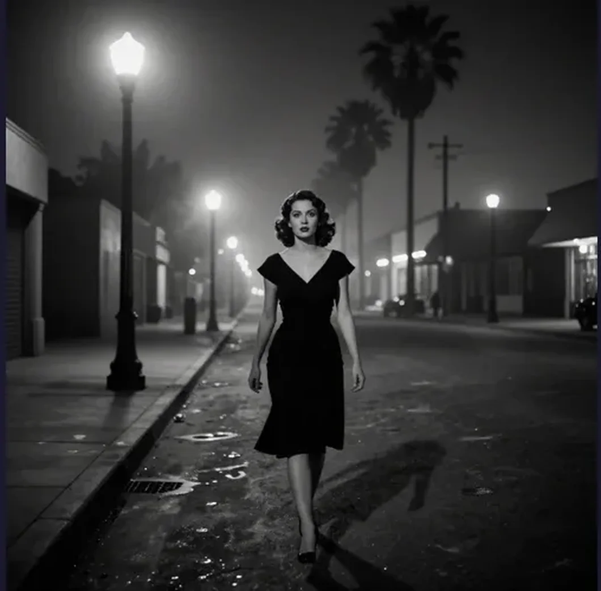

Black Dahlia: The Gruesome 1947 Murder That Remains Hollywood's Greatest Unsolved Case

The Black Dahlia murder of 1947 remains Los Angeles' oldest unsolved homicide, a case that continues to captivate and horrify nearly eight decades later.
It was the morning of January 15, 1947, in Los Angeles. A young mother named Betty Bersinger was walking with her three-year-old daughter along South Norton Avenue. This was in a neighborhood called Leimert Park. At about 10:30 a.m., she saw something pale in a vacant lot. She thought it was a store mannequin that someone had thrown away.
She moved closer. It was not a mannequin. It was the body of a young woman. She had been laid out carefully, with her arms raised above her head. Betty Bersinger hurried away to call the police.
The woman was Elizabeth Short, a twenty-two-year-old who dreamed of being an actress. Within days, the newspapers gave her a name: the Black Dahlia. The name is still used today.
Her murder is the oldest unsolved killing in the history of Los Angeles. It is also the most heavily investigated case in the history of the Los Angeles Police Department, the LAPD. No one was ever arrested. No one was ever charged.
Elizabeth Short was born on July 29, 1924, in Hyde Park, a neighborhood of Boston, Massachusetts. She was the third of five daughters of Cleo and Phoebe Short. Her father worked as a bookkeeper. Then the Wall Street Crash of 1929 destroyed his business, which built miniature golf courses.
In 1930, the family heard that Cleo Short had left his car by the Charlestown Bridge. Everyone thought he had jumped into the Charles River and drowned. In truth, he had walked away from his family. He had faked his own death to escape his money troubles.
Elizabeth grew up in Medford, Massachusetts. She spent winters in Miami, Florida, where her father had once run a miniature golf course. By all accounts she was a striking girl, with dark hair and fair skin. She was also small, shy, and quiet. She had asthma, and her medicine may have included drugs called barbiturates.
In December 1942, a letter came from Cleo Short. He was alive, and he was living in Vallejo, California. The family was stunned. Elizabeth was eighteen. In 1943, she traveled to California to live with her father.
The reunion did not last. Within weeks, they clashed. Elizabeth did not like her father’s strict rules. Cleo was upset that his daughter could not keep a job. He sent her away.
From then until her death, Elizabeth moved between California, Florida, and Massachusetts. She stayed with friends, boyfriends, and people she knew. In January 1943, she worked for a short time at the Camp Cooke military store in California. In August 1943, she was arrested in Santa Barbara for drinking under the legal age.
She tried to become an actress but never won a real part. People who knew her said she was pretty and had modest talent. They said she cared more about the dream of Hollywood than about the hard work it took.
In the months before her death, Short lived in Hollywood. She went to nightclubs and bars and met soldiers and young filmmakers. On the evening of January 9, 1947, she was last seen alive at the Biltmore Hotel in downtown Los Angeles. What happened to her between that night and the day her body was found, six days later, is still completely unknown.
The nickname “Black Dahlia” was invented by reporters in the days after the murder. It may have come from a 1946 film noir called The Blue Dahlia, written by Raymond Chandler. A film noir is a dark crime film. The newspapers claimed that Short wore sheer black clothes and black flowers in her hair. No trustworthy source says this was true.
Her friends said nobody called her “the Black Dahlia” while she was alive. The name was a media invention. It turned a real person into a spooky symbol. It also made sure that the case would always be treated as a legend.
The place where she was found was 3815 South Norton Avenue. The first police officers there said they had never seen anything like it. The investigators believed the killer had medical training or great skill with a blade.
The body had been washed clean and placed in a pose on purpose. There was no blood anywhere at the scene. So the police knew that Elizabeth Short had been killed somewhere else. Her killer had cleaned her, carried her to the lot, and left her there for people to find. The vacant lot was not the crime scene. It was a place to show her.
The doctor who studied the body was Dr. Frederick Newbarr. He found that she had died from injuries to her head. There were also marks on her wrists and ankles that showed she had been tied with rope. Terrible injuries had also been done to her body after she died. The police have never said exactly why.
The police named her within hours. They used fingerprint records from her 1943 job and her arrest. The FBI confirmed the match in just fifty-six minutes. It used a device called a Soundphoto, an early kind of fax machine used by news services.
The LAPD sent blurred fingerprints to the FBI in Washington. The FBI matched them to prints from her job at Camp Cooke and her arrest in Santa Barbara. The FBI also held her mugshot and gave it to the press. This added to the media frenzy. At that time, the FBI had more than 100 million fingerprint cards on file, so the speed was very impressive.
The LAPD gave the case to Detective Harry Hansen and Detective Finis Brown. Both were experienced. The first lead detective, Will Fitzgerald, was quickly replaced. The case became the largest investigation in LAPD history. It produced more than 1,000 pages of reports and involved more than 750 officers. And yet it found nothing.
From the start, the newspapers made the work harder. Reporters trampled the scene before it could be properly closed off. Newspapers printed shocking details about Short’s life, and many were invented. They called her a wild party girl. But the people who knew her said she was shy, quiet, and a little awkward. She was not the dangerous glamorous woman the press invented. But the myth had already taken root.
The killer, or someone pretending to be the killer, teased the police. Letters and packages were sent to the LAPD and to newspapers. Some held Short’s belongings, such as her birth certificate, her Social Security card, photographs, and an address book. The letters used words cut out of newspapers and magazines. Many of them have never been tied to the real killer. They may have been hoaxes by people who wanted attention.
There were also many false confessions. More than fifty people came forward to say they did it, drawn by the fame of the case. Some were ill in their minds. Some wanted attention. Several were drunk. One man confessed, took it back, confessed again, and then tried to end his own life on the steps of the LAPD headquarters.
Every confession was checked and rejected. The real killer never confessed.
The police looked at hundreds of suspects. A few stand out. Dr. George Hodel was a clever doctor who collected surrealist art. Surrealist art is strange, dreamlike art. The LAPD watched him in 1950. His son Steve Hodel, a former LAPD detective, has spent decades arguing that his father was the killer.
Leslie Dillon was a bellhop who wanted to be a writer. He sent letters to the LAPD with his own ideas about the murder, and he became a suspect. He was questioned at length but never charged. Mark Hansen owned a nightclub and knew Short. He was the last known person to hold her address book. He helped the police and was cleared. Robert “Red” Manley was a salesman who had dated Short and was one of the last people to see her alive. He passed a lie detector test and was cleared.
The most talked-about suspect is Dr. George Hill Hodel (1907–1999). He was a well-known Los Angeles doctor, and the LAPD formally investigated him in 1950. He was charming and very clever. His friends included the artist Man Ray and the film director John Huston. He lived in the Sowden House, a mansion in Hollywood designed by Lloyd Wright. It was famous for its wild parties.
Hodel came under suspicion after he was arrested in 1949 on a charge involving his own daughter, Tamar Hodel. He was found not guilty at trial. But the case led the police to listen secretly to him in early 1950, with hidden microphones in his home and office. His son Steve Hodel later got the recordings. They reportedly caught George Hodel saying: “Supposin’ I did kill the Black Dahlia. They couldn’t prove it now. They can’t talk to my secretary because she’s dead.”
In the 2000s, Steve Hodel published a book called Black Dahlia Avenger. He argued that his father killed Elizabeth Short and also committed other unsolved murders in Los Angeles in the 1940s. He pointed to his father’s medical training. He also pointed to Man Ray’s photographs, which he said looked like the scene in the vacant lot. And he pointed to the recordings.
Critics answer that the recordings are unclear and the other evidence is thin. Steve Hodel’s theory also needs his father to be linked to crimes spread over decades and many states.
In 1987, the writer James Ellroy published a novel called The Black Dahlia. Many people credit it with bringing back public interest in the case. Ellroy’s own mother was murdered in 1958, in a case that was never solved. It haunted him for decades.
His book mixed real details of the case with the drama of film noir. It became a bestseller around the world. In 2006 it was made into a film, directed by Brian De Palma and starring Josh Hartnett and Scarlett Johansson. The novel was fiction. But it showed millions of readers the real Elizabeth Short. It turned a fading cold case into a lasting part of American true crime stories.
Ellroy has said that his interest in the case could not be separated from his grief over his mother. Two unsolved crimes were tied together in the dark legend of Los Angeles.
In almost every way, the Black Dahlia case is a dead case. The main suspects have all died. The physical evidence that survived the LAPD’s mistakes has broken down too far to be useful. No DNA from the scene has ever been matched to a suspect. The case file is thousands of pages long. It sits in the LAPD archives, and historians and true crime fans read it. But it gives no new leads.
The Los Angeles County District Attorney’s office officially reopened the case in 2013, after Steve Hodel offered new evidence linking his father to the murder. No charges were filed.
In 2018, a retired LAPD detective named Steve Egger studied the teasing letters sent to the police in 1947. He said the handwriting and the way of writing matched George Hodel. This was a hint, but it was far from proof.
The sad truth is that the case could probably have been solved in 1947. A careful investigation with enough help, and no interference from the press, might have found the killer. But the LAPD was overwhelmed. The scene was spoiled, and witnesses had scattered. The flood of false leads and false confessions buried the real clues. By the time the police found their footing, the trail had gone cold.
Yet the fame of the case has only grown. The Black Dahlia lasts not because it can be solved, but because it cannot. It tells an old kind of tale. A beautiful young woman is destroyed by an unknown hand. A city of dreams shows its dark side. And the people trusted to keep order fail to bring justice.
The murder of Elizabeth Short is no longer a police case. It is a cultural story, told so many times that the real woman has almost vanished behind the legend. She was not a dangerous glamorous woman. She was not a criminal. She was not the dark queen of Hollywood. She was a twenty-two-year-old from Boston who wanted to be an actress.
The LAPD investigated more than 400 suspects and solved nothing. The case brought more than 50 false confessions and not one true one. More than 75 years later, the person who killed Elizabeth Short has never been identified. Who was the careful stranger who vanished without a trace? The truth died with the killer, and the legend lives on.
References & Further Reading
Legends of America: Elizabeth Short — Detailed chronology of Short’s life and the investigation
Wikipedia: Black Dahlia (film) — The 2006 Brian De Palma adaptation and its cultural impact
📚 Recommended Reading: Black Dahlia Murders by Don Lasseter (on Amazon) — As an Amazon Associate, we earn from qualifying purchases.
Editorial note: The Black Dahlia case is documented through official LAPD records, FBI files, court transcripts, and the work of historians and investigative journalists. See our Editorial Policy.